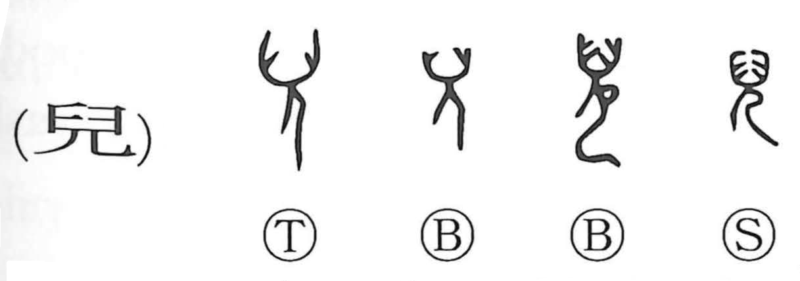

児

Kun: ko, midorigo, kodomo | On: ji, ni
child ・ infant
Explanation
児, formerly 兒, pictures a child identified by its hairstyle. The early forms show the hair arranged to either side of the head, rather like the paired bunches of Japanese mizura. The distinctive dressing marks the wearer as a young child.
An early account of infant care describes choosing a day three months after birth to arrange the hair: boys received the horn-like style and girls a different binding. The graph preserves this visible sign of childhood. Its basic meaning is a child or infant, with later uses for someone’s child or for treating a person as immature.